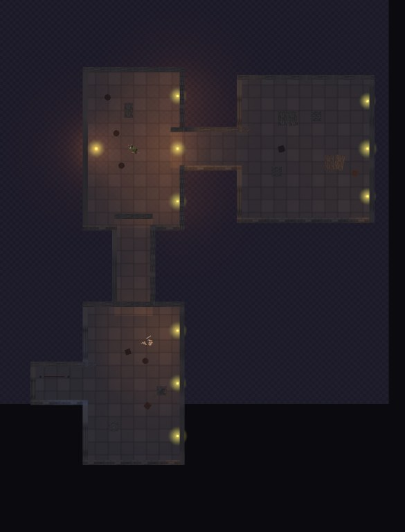
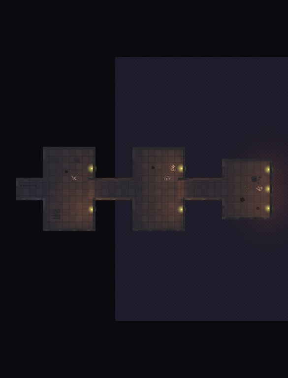
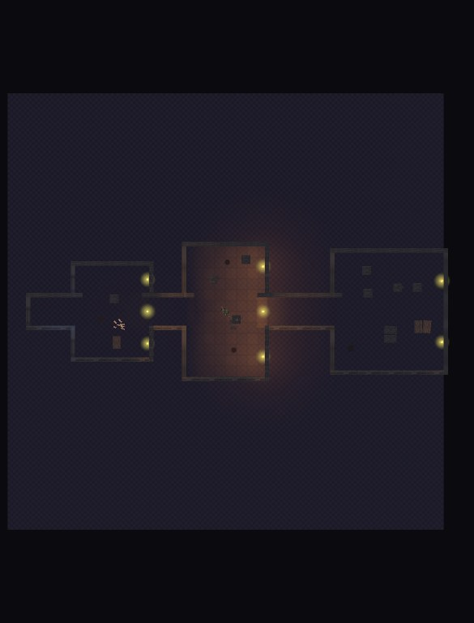
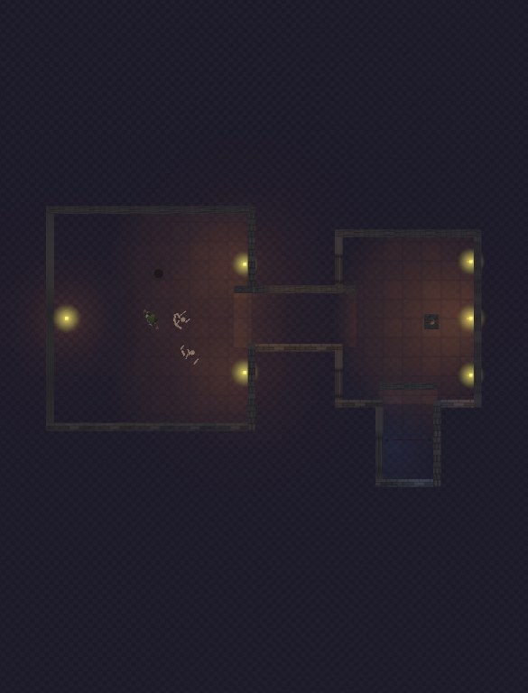
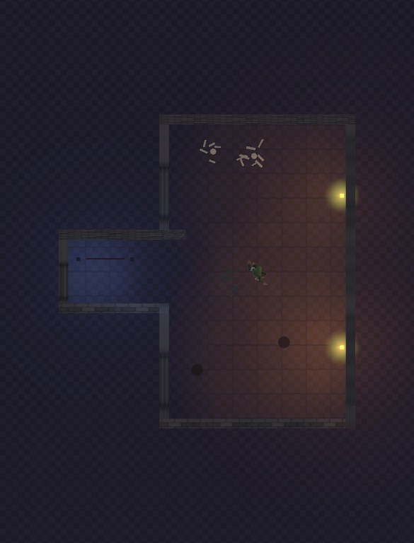
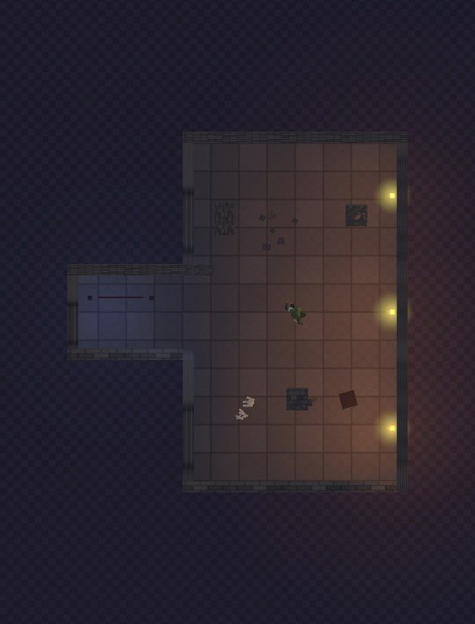
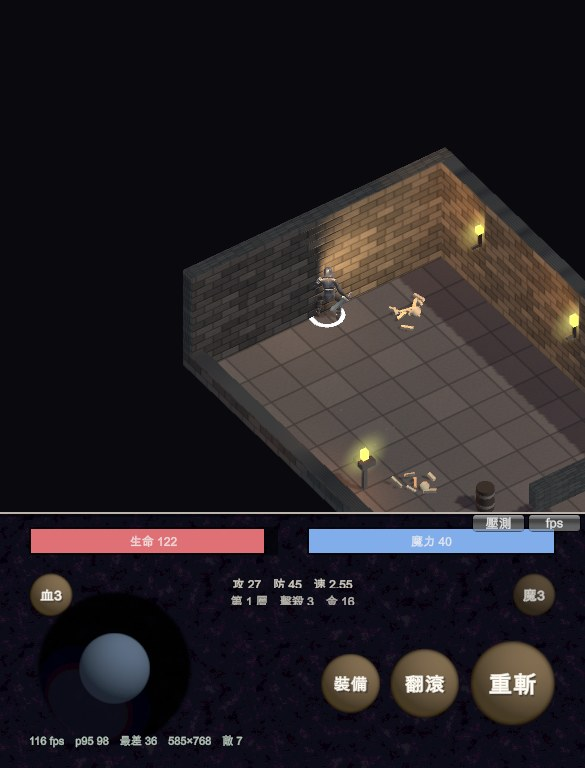

地城迴響 · 樓層生成
每層由 2～3 間房用固定長度的走廊拼起來，沒接到走廊的接口自動砌牆。 第 18 層以後從這 17 層抽版型，但怪物強度照真實層數算。
下面的俯視圖是架構示意圖，不是遊戲的實際亮度。為了看清楚拼裝結構， 這幾張刻意關掉了霧、把環境光拉亮。實際遊玩時只看得到自己身邊那一圈 ——暗黑風格的照明在最後一節。






「玩家走得到出口」不是檢查，是硬條件——走不到出口的樓層等於壞掉的樓層。 測試會生成 200 層，在可走區域鋪 0.35 公尺格點做 BFS， 而且每一步都要通過遊戲實際在用的那個位置修正函式： 如果它會把角色推回去，那個點就不算走得到。
| 項目 | 結果 |
|---|---|
| 出口不可達 | 0 / 200（0.0%） |
| 房間數分布 | 2 間 × 103、3 間 × 97 |
| 平均走廊段數 | 2.49 |
| 出口落在第一間房 | 0（0.0%） |
| 被保底規則救回來的樓層 | 2 |
「出口落在第一間房 = 0%」這一列是刻意加的：它保證每一層都真的要走過走廊， 而不是原地就能下樓。
零、走廊兩端在視覺上是封閉的（使用者回報）。
牆上挖門洞的判定寫的是「哪個區塊的邊緣剛好貼齊這道牆線」。 但走廊是刻意咬進房間 0.9 公尺的，邊緣落在房內、不在牆線上—— 判定不成立，門洞一個都沒挖，走廊兩端全被牆封死。 正確的判定是「哪個區塊跨過這道牆線」。
200 層的 BFS 對這個 bug 完全盲眼，因為可走判定與畫出來的牆是兩套 獨立的系統：資料上通、視覺上封死，測試照樣全綠。現在多量一個 「走廊接口被牆堵住幾個」。
而且這個新指標本身也驗過了：把修正退回舊邏輯重跑，六層的每一個接口
都被判定為堵住（5/5、5/5、5/5、3/3、1/1、1/1），同時
出口可達 仍然全是 True。它抓得到，不是那種永遠會過的指標。
一、每層只生成一間房，而連通性測試 100% 通過。
走廊兩端是故意咬進相鄰房間 0.9 公尺的——不這樣做，兩塊區域剛好相接的 接縫會留下一條沒有主人的死帶，角色會被推回去，門口全變成看不見的牆 （第一版實測 100% 走不到第二個房間）。但重疊檢查照單全收，於是走廊永遠 跟來源房間「重疊」、每次拼接都被駁回，每層只剩一間房。
而測試照樣全綠——單房樓層的出口本來就在同一間房裡。是後來拍俯視圖時 才看到「房間=1、走廊=0」。測試現在會一併回報房間數分布與走廊段數， 這種壞法不會再靜悄悄地通過。
二、保底規則其實不保底。
原本的規則是「不通就從最靠近走廊的障礙物開始拆」，但擋路的東西不在走廊附近時 就會一直拆錯，最後卡在迴圈上限。實測 200 層有 5 層失敗、0 層被救回。
現在分三段，最後一段是無條件的：先拆走廊附近的（保留房間中央的擺設，畫面才不空）， 不夠就從尾端逐一拆，再不行就全部清空。全部清空必定退回純幾何， 而純幾何的連通率是 100%。

這裡沒有「玩家走過走廊進入第二間房」的截圖。拍截圖的驅動程式是直線往前走的， 撞到北牆就停了，不會自己找門。走廊確實通得過——那是 200 層 BFS 測出來的， 每一步都用遊戲實際的位置修正函式——但要拍成畫面得先幫截圖驅動加尋路， 那是另一件事。
環境光壓到 0.035、指數平方霧、主光只有 0.12，玩家自己帶一盞會呼吸的點光源。 房間的存在感靠火盆與自己的光圈逐步揭露。上面的俯視圖把這些全關掉了， 實際遊玩的畫面在Demo 頁。